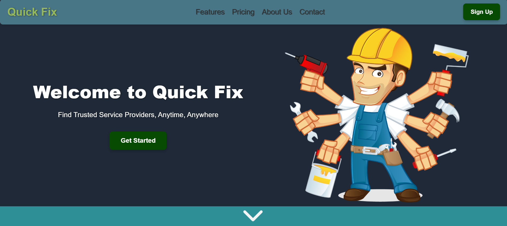
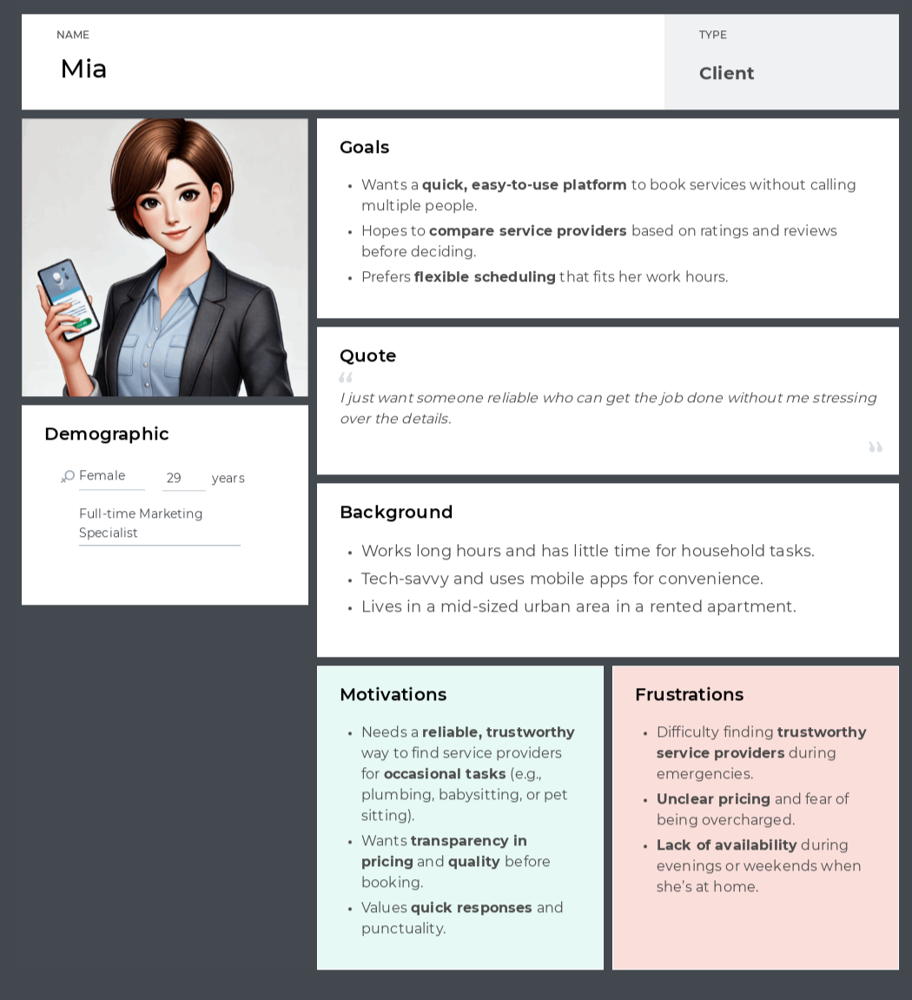
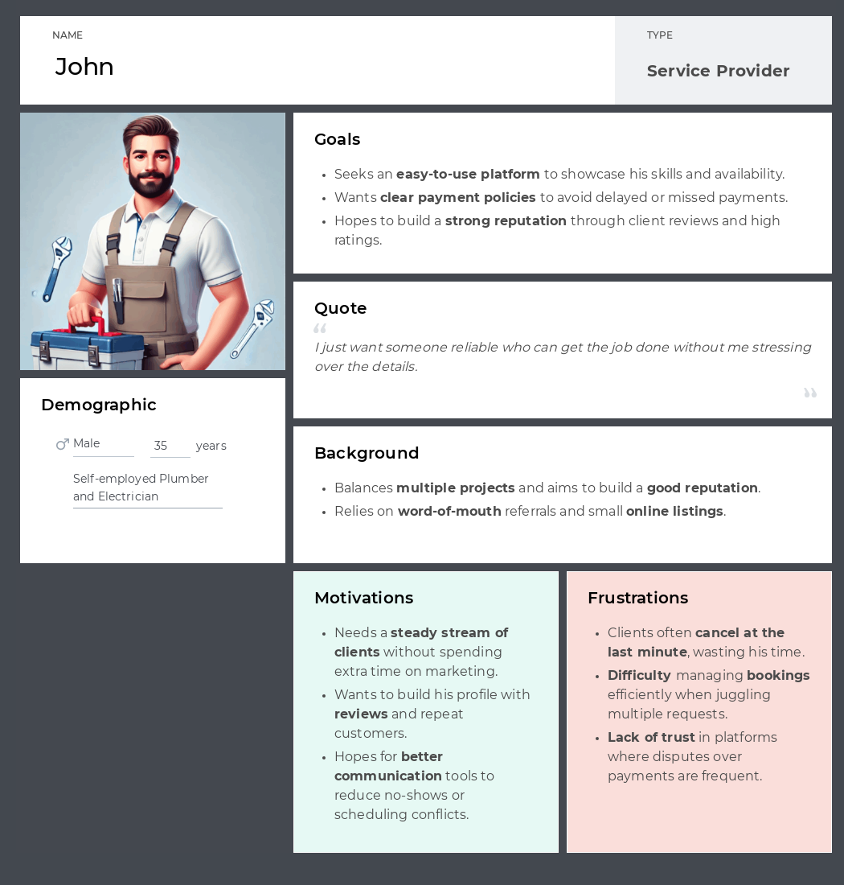

victormirescu2000@gmail.com
Project Manager
alexx.valcu17@gmail.com
Team Lead
themanuel31@gmail.com
Software Architect
razvanlita@gmail.com
Backend Developer
danicartale2001@gmail.com
Frontend Developer
bscleostefan@gmail.com
DevOps
Finding skilled and reliable service providers is a time-consuming and frustrating process for individuals, as it often involves searching through unverified sources or relying on word-of-mouth. Service providers, on the other hand, struggle to gain visibility and connect with potential clients, limiting their ability to grow their businesses.
We provide an intuitive app that connects customers with service providers across various fields, allowing users to search, filter, and book professionals based on reviews, availability, and proximity. The platform simplifies the process, ensures transparency, and fosters trust between clients and providers.
We connect customers with reliable service providers, saving time and reducing the hassle of finding qualified professionals, while empowering providers to grow their client base and streamline their operations.
Homeowners and individuals seeking help with tasks like repairs, cleaning or other home chores.
Service providers such as plumbers, mechanics, cleaners etc.
mesterilocali, StarOfService, Handy
Facebook groups, OLX, word-of-mouth recommendations
Offers a wide range of services in one platform, from technical repairs to personal household services.
Enables users to find providers by rating, proximity, availability, and price.
Verified reviews and detailed profiles ensure reliability and confidence for both customers and providers.
Accessible to independent professionals and small businesses, with options for premium features.
Number of active users - customers and providers
Number of bookings completed through the platform
Retention rate for both customer and provider segments
Average time to book a service
Customer satisfaction score based on reviews and feedback
Development and maintenance of the platform
Marketing and advertising to attract users
Customer support and technical service
Cloud hosting and payment processing costs
A percentage-based commission on every completed transaction.
Monthly or yearly plans for providers offering advanced features such as priority listing and enhanced profile visibility.
Sponsored placements for providers to increase their visibility on the platform.
During initial research, we found that individuals in Romania looking for service providers often face significant challenges, such as lack of trust, inconsistent quality of services, and inefficient booking processes. People rely heavily on recommendations from friends, social media groups, or outdated online listings that lack verified reviews and detailed information. Additionally, service providers struggle to find reliable clients and build their reputations in a crowded marketplace. The core problem centers on the absence of a centralized, trustworthy, and user-friendly platform where service seekers can easily connect with verified providers and manage bookings seamlessly.
Our solution is a comprehensive app that acts as a marketplace connecting service providers and customers across multiple categories, such as housekeeping, plumbing and many others. The app offers features like verified profiles, customer reviews, live availability tracking, and instant booking. Additionally, it includes a secure communication system, payment options, and personalized service recommendations based on customer preferences. For service providers, the platform offers tools to manage bookings, track earnings, and build their reputation through verified ratings and reviews. By simplifying and automating the process, the app aims to create a reliable ecosystem for both service seekers and providers.
To verify our understanding of the domain's challenges and test our solution's potential, we planned a structured customer discovery process:
Urban residents needing domestic or professional services.
Small-scale service providers looking for a platform to grow their client base.
Social media ads targeting specific demographic groups in urban areas.
Direct engagement in local social-media groups.
Our data collection included semi-structured interviews, using a set of open-ended questions to understand both their current needs and pain points, and to gauge their interest in our proposed features.
Validate the need for a centralized service marketplace.
Understand which features are most desirable for both users and service providers.
Gauge willingness to adopt and pay for the app.
To attract initial users, we plan to launch a sign-up option for email updates on our website and social media campaigns showcasing the app's key benefits. A referral program will also encourage both service seekers and providers to join the platform.
Having all these set, we started looking for people who would be interested in our idea. We used social media platforms such as
Facebook, Whatsapp and Messenger to connect with potential customers on community groups. Informal interviews revealed key insights
into both customer and provider needs.,
adding a few of the evidence we gathered to our Google Drive.
For instance, many customers emphasized the importance of verified reviews and reliable booking systems, while providers highlighted the challenge of
gaining trust and visibility.
We tried to adopt an approach which is indicated in the Mom Test book, and so we decided on 3 main questions to be asked during the interviews
and some additional questions depending on the answers we received. We also tried to keep the conversation as natural as possible, to make the
interviewee feel comfortable and to get the most honest answers.
The main questions were:
The potential customers we interviewed provided rich insights into their experiences and challenges with hiring service providers. We discovered that many individuals rely on informal methods such as recommendations from friends and family or social media groups to find professionals. While these methods offer some level of trust, they often lack consistency and reliability. Interviewees highlighted the need for a platform that centralizes verified reviews and offers transparent information about qualifications and certifications to make informed decisions confidently.
A recurring theme among the customers was the frustration of service providers not showing up or canceling appointments at the last minute. This left many scrambling to find alternatives, leading to delays in resolving urgent problems. Customers expressed a strong interest in features like guaranteed bookings, real-time availability, and notifications to avoid these inconveniences. Additionally, they appreciated the idea of a system where service providers are held accountable for reliability and punctuality through ratings and reviews.
Another common challenge was the time it takes to find a suitable provider for specific needs, particularly for urgent or specialized services such as plumbing or electrical repairs. Most participants noted that they preferred platforms with robust search and filter options to quickly identify the right fit based on their criteria. They also valued recommendations and reviews from verified customers to ensure quality and trustworthiness.
Service providers, on the other hand, revealed their struggles with visibility and building trust among new customers. Many expressed interest in a system that highlights their verified credentials, customer testimonials, and work portfolios. They believed that these features would enhance their reputation and attract more clients. Additionally, they mentioned the need for tools to manage bookings and communicate effectively with customers, reducing misunderstandings and improving efficiency.
While most of the interviews yielded valuable insights, a few participants expressed skepticism about adopting a new platform. Their concerns revolved around the learning curve and costs. However, this feedback underscored the importance of designing a user-friendly interface and offering flexible subscription plans to cater to different user segments, including occasional users and small-scale service providers.
Building trust was a primary concern for users. We prioritized implementing verified profiles for service providers, including background checks and certifications.
Customers expressed frustration with slow response times. We prioritized live availability tracking and instant booking functionality.
The need for transparency led us to focus on verified ratings and reviews, ensuring that only customers who have booked a service through the app can leave feedback.
Based on feedback, we expanded our initial categories to include niche services like personal chefs and part-time petsitters or babysitters, reflecting user demand.
Providers wanted tools to simplify their work. We introduced features like earnings tracking, schedule management, and promotion options to help them grow their business.
We believe we are ready to enter the Customer Validation stage. We have a clear understanding of user needs and have tailored our app to address these pain points with features like verified profiles, instant booking, and robust rating systems. Feedback from initial interviews shows strong interest in a reliable, transparent platform that simplifies the process of finding and hiring service providers.
Our next step is to launch a beta version of the app with a select group of users, including both service seekers and providers, to test usability and gather detailed feedback. This stage will help us refine key features, validate the subscription model, and ensure the app meets the expectations of our target audience.
For this step, we used Figma in order to develop the wireframes. They can all be seen here.
This is how the first prototype of the landing page looks like for the moment. We mention that it might suffer various changes in the development process.
The interviews for this milestone can be seen here. From these, we concluded that our solution might be very useful for both clients and workers. Mainly, clients need reliable workers to solve their problems efficiently and effectively. They often face challenges in finding trustworthy professionals who can deliver quality services on time. Our platform addresses this issue by providing a centralized location where clients can search for and book skilled workers with ease. The platform's features, such as verified profiles, customer reviews, and real-time availability, ensure that clients can make informed decisions and find the right professional for their needs quickly.
On the other side, there are many skilled workers whose services are not promoted well enough, leading to underutilization of their skills and potential. These workers often struggle to reach a broader audience and secure consistent work. Our application offers them a valuable opportunity to showcase their services to a larger pool of potential clients. By creating detailed profiles, highlighting their qualifications, and receiving verified reviews, workers can build their reputation and attract more clients. The platform also provides tools for managing bookings and tracking earnings, helping workers streamline their operations and grow their businesses.
Overall, our solution bridges the gap between clients seeking reliable services and workers looking for more visibility and opportunities. It creates a win-win situation where clients can easily find and hire trustworthy professionals, and workers can expand their client base and enhance their careers.
User personna for the client.
User personna for the worker.
User flow for clients
After logging in the app, the clients can choose one of the services available - plumber, mechanic, electrician or other (in other, we have a list of more services we discovered in the interviews that might be useful). Then, depending on the service selected, the user sees a variety of workers from the app, he can see their profiles and choose to do a booking - in this step, he chooses a date and an hour depending on the worker's availability, then adds a payment method and confirms the booking. Also, each client has its personal profile page with relevant details.
User flow for workers
After logging in the app, the workers can see their profile where they can edit their description and add furhter qualifications regarding their job, while they have also got te possibility to see the bookings they have and the reviews they received. This way, they can improve their services and get more clients.